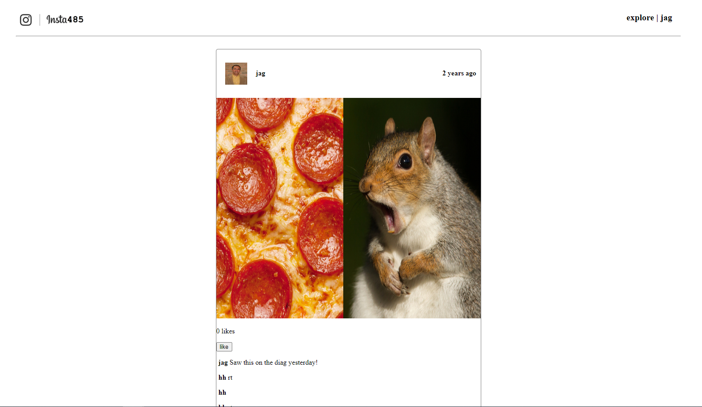
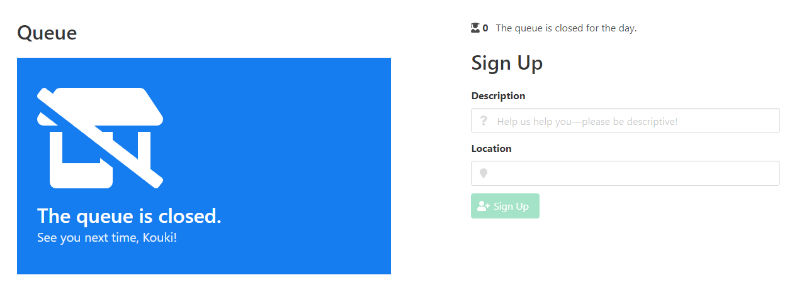
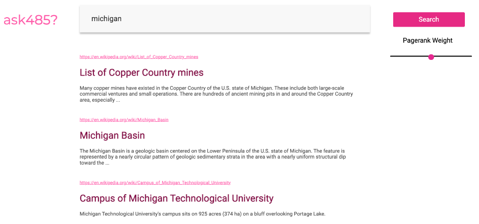

Projects and Experiences
EECS 470 Final Project

Architected, Designed, and Verified an Out-of-Order RISC-V processor following MIPS R10K Style scheduling and register renaming, with 3-way superscalar, early branch resolution, and non-blocking caches.
Languages Used: Verilog/System Verilog, C, Python,
March 2022 - April 2022
EECS 470 Final Project
Description:
Architected, Designed, and Verified an Out-of-Order RISC-V processor following MIPS R10K Style scheduling and register renaming
Time Frame:
March 2022 - April 2022
NVIDIA Internship
Designed and implemented the architecture, RTL, and verification of a hardware debugger for easier pre and post silicon verification of low-power GPU features.
Languages used: Verilog, C++, Perl, Python
August 2022 - December 2022
NVIDIA Internship
Description:
Designed and implemented the architecture, RTL, and verification of a hardware debugger for easier pre and post silicon verification of low-power GPU features.
Time Frame:
August 2022 - December 2022
Brainchip Inc. Internship
Developed verification scripts in Python to run RTL regression simulations on multiple machines for a more streamlined verification process.
Languages Used: Python, Verilog/System Verilog
May 2022 - August 2022
Brainchip Inc. Internship
Description:
Developed verification scripts in Python to run RTL regression simulations on multiple machines for a more streamlined verification process.
Time Frame:
May 2022 - August 2022
NVIDIA Internship
Will be returning to NVIDIA in Summer 2023 as an ASIC Design Intern.
Starting May 2023
NVIDIA Internship
Description:
Returning Summer 2023 ASIC Design Intern.
Time Frame:
Start Date: May 2023
f
Small mock office hours queue program using Linked Lists, first experience of parsing JSON files
Languages Used: C++
Completed Mar 2021
Office Hours Queue EECS 280
Description:
Built a mock office hours queue program using Linked Lists alongside a mock API and GUI.
Time Frame:
Completed: March 2021
Map Reduce

Single Machine, multi-threaded server that executes user-submitted Map Reduce Jobs.
Languages Used: Python
Completed Nov 15th 2022
Map Reduce EECS 485
Description:
Single machine, multi-threaded server that executes user-submitted Map Reduce jobs. Built using Python.
Time Frame:
Completed: October 9th 2022
Ask485
Scalable search engine similar to Google using a mock Wikipedia database
Languages Used: HTML, CSS, Python, SQL
Completed Dec 6th 2022
Ask485 EECS 427
Description:
Scalable search engine similar to Google using a mock Wikipedia database. Allowed user to input a query where we calculated a inverted index and ranked documents to display accurate results.
Time Frame:
Completed: December 6th 2022